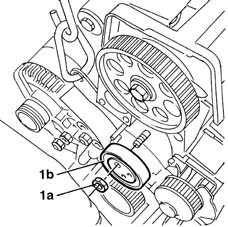
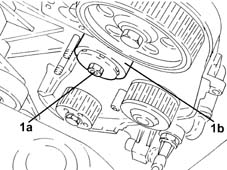
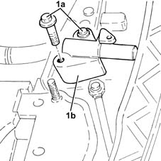
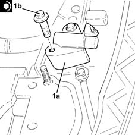

1032C10 MOVING timing TENSIONER - R.R. with timing belt/chain removed
- Path
- Procedures > 10 ENGINE > 1032 TIMING SYSTEM > 1032C timing system tensioners > 1032C10 MOVING timing TENSIONER - R.R. with timing belt/chain removed
- Kind
- repair procedure (removal / refitting; the operation number is the code)
- Applies to
- all engines; all production periods
- Interactive page
- https://sloeber94.github.io/elrnDB-lYpsln/en/#/2428890
Applies to: engines: 1.2 8v; all production periods
 Removing
Removing
 Refitting
Refitting1. Completely undo the nut (1a) loosened previously and remove the timing belt moving tensioner (1b).

Applies to: engines: 1.2 16v; all production periods
Removing
Refitting1. Completely undo the nut (1a) loosened previously and remove the timing belt moving tensioner (1b).

Applies to: engines: 1.4 16v; all production periods
Removing
Refitting1. Completely undo the nut (1a) loosened previously and remove the timing belt moving tensioner (1b).
Applies to: engines: 1.3 JTD; all production periods
Removing
Refitting1. Undo the bolts (1a) and remove the moving timing belt tensioner (1b).

Applies to: engines: 1.2 8v; all production periods
Refitting
RemovingFit the timing belt mobile tensioner and fix it using the nut without tightening it.
Applies to: engines: 1.2 16v; all production periods
Refitting
RemovingFit the timing belt mobile tensioner and fix it using the nut without tightening it.
Applies to: engines: 1.4 16v; all production periods
Refitting
RemovingFit the timing belt mobile tensioner and fix it using the nut without tightening it.
Applies to: engines: 1.3 JTD; all production periods
Refitting
RemovingUsing suitable equipment (e.g. a vice), prepare the moving tensioner and keep it fully retracted using a suitable pin.
1. Fit the mobile timing belt tensioner (1a) and secure by tightening the bolts (1b) to the recommended torque.
 | Fastening | Component | Ø | Value (daNm) |
|---|---|---|---|---|
1b | Bolt | MOBILE TIMING TENSIONER | M6 | (Cylinder head side) 0.8 ÷ 1.0 |
